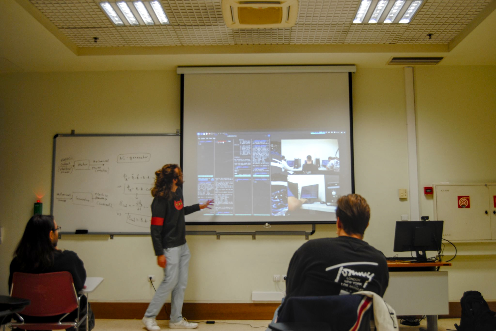

Clubs and Leadership
1 CTF Club - Co-Founder and President
I spent my Fall ’24 semester studying abraod at the American College of Thessaloniki(ACT). While there, I noticed a lack of a Cybersecurity centric club, and I decided to create my own. Along with my classmates Ryan Raschkovsky, Cooper Oliff, and Arav Budhiraja, I founded and led a Cybersecurity CTF Club for my duration at ACT.
I oranized weekly meetings and taught cybersecurity skills to a wide community of students. Through informational lectures, I taught members networking concepts such as TCP versus UDP connection. Using interactive activites using Over the Wire and performing live exploits on virtual machines(and sometimes eachother’s laptops), we taught integral concepts of pentesting and defense.
 photo by Ryan Raschkovsky
At the end of the semester, we organized a school wide CTF. Using an isolated switch and RDP, we set up desktop computers with Kali linux and students competed to capture 4 flags of increasing difficulty. In another room, I displayed live footage of the contestants screens to an audience of non-competitors and explained the tools and methods they were utilizing. The whole event was livestreamed to Twitch and posted on youtube here.